전기공사산업기사 (2019-09-21 기출문제)
1과목: 전기응용
1. 조절부의 전달특성이 비례적인 특성을 가진 제어시스템으로서 조절부의 입력이 주어지고 그 결과로 조절부의 출력을 만들어 내는 동작은?
- 비례동작
- 적분동작
- 미분동작
- 불연속동작
(정답률: 81%)

2. 열차의 차체 중량이 75ton이고 등륜상의 중량이 50ton인 기관차의 최대 견인력은 몇 kg인가? (단, 궤조의 점착계수는 0.3으로 한다.)
- 10000
- 15000
- 22500
- 1125000
(정답률: 65%)
3. 고주파 유전가열의 용도로 적합하지 않은 것은?
- 목재의 접착
- 플라스틱 성형
- 비닐의 접착
- 금속의 열처리
(정답률: 68%)
4. 열 절연재료로 사용되는 내화물의 구비조건이 아닌 것은?
- 사용 온도에 견딜 것
- 열간 하중에 견딜 것
- 급열, 급랭에 견딜 것
- 내식성이 적을 것
(정답률: 77%)
5. 노 바닥의 하부전극은 탄소덩어리로 되어있으며 세로형이고, 선철, 페로알로이, 카바이트 등의 제조에 사용되는 전기로는?
- 제선로
- 아크로
- 유도로
- 지로식전기로
(정답률: 59%)
6. 흑체 복사의 최대 에너지의 파장 λm은 절대온도 T와 어떤 관계인가?
- T4에 비례
- 1/T 에 비례
- 1/T2 에 비례
- 1/T4 에 비례
(정답률: 47%)
7. 음극에 아연, 양극에 탄소봉, 전해액은 염화암모늄을 사용하는 1차 전지는?
- 수온전지
- 리튬전지
- 망간건전지
- 알칼리건전지
(정답률: 64%)
8. 전철의 급전선의 구간은?
- 전동기에서 레일까지
- 변전소에서 트롤리선까지
- 트롤리선에서 집전장치까지
- 집전장치에서 주전동기까지
(정답률: 66%)
9. 다음 회로에서 입력전압 ei(V)와 출력전압 eo(V) 사이의 전달함수 G(s)는?
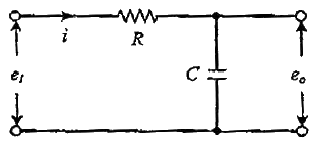
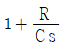
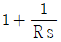
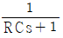
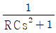
(정답률: 70%)
10. 평등전계에서 기체의 온도가 일정한 경우, 방전개시전압은 기체의 압력과 전극간격의 곱의 함수로 결정된다. 이것을 표현한 법칙은?
- 파셴의 법칙
- 스토크의 법칙
- 플랑크의 법칙
- 스테판 볼츠만의 법칙
(정답률: 65%)
11. 교류 3상 직권 정류자 전동기는 다음에 분류하는 전동기 중 어디에 속하는가?
- 정속도 전동기
- 다속도 전동기
- 변속도 전동기
- 가감속도 전동기
(정답률: 49%)
12. 기체 또는 금속 증기 내의 방전에 따른 발광현상을 이용한 것으로 수은등, 네온관등에 이용된 루미네선스는?
- 열 루미네선스
- 결정 루미네선스
- 화학 루미네선스
- 전기 루미네선스
(정답률: 67%)
13. 200W는 약 몇 cal/s인가?
- 0.24
- 0.86
- 47.8
- 71.7
(정답률: 67%)
14. 모든 방향으로 360cd의 광도를 갖는 전동을 직경 2m의 원형 탁자의 중심에서 수직으로 3m 위에 점등하였다. 이 원형 탁자의 평균 조도는 약 몇 lx인가?
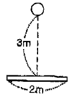
- 37
- 126
- 144
- 180
(정답률: 43%)
15. 열전온도계에 사용되는 열전대의 조합은?
- 백금-철
- 아연-백금
- 구리-콘스탄탄
- 아연-콘스탄탄
(정답률: 74%)
16. 전기화학 공업에서 직류전원으로 요구되는 사항이 아닌 것은?
- 일정한 전류로서 연속운전에 견딜 것
- 효율이 높을 것
- 고전압 저전류일 것
- 전압조정이 가능할 것
(정답률: 59%)
17. PN 접합 다이오드에서 Cut-in Voltage란?
- 순방향에서 전류가 현저히 증가하기 시작하는 전압
- 순방향에서 전류가 현저히 감소하기 시작하는 전압
- 역방향에서 전류가 현저히 감소하기 시작하는 전압
- 역방향에서 전류가 현저히 증가하기 시작하는 전압
(정답률: 62%)
18. 직류전동기의 속도제어법 중 가장 효율이 낮은 것은?
- 전압제어
- 저항제어
- 계자제어
- 워드 레오너드 제어
(정답률: 67%)
19. 200V의 단상 교류 전압을 반파 정류하였을 경우, 직류 출력전압의 평균값(V)는?
- 90
- 110
- 180
- 200
(정답률: 58%)
20. 루소선도에서 광원의 전광속 F의 식은? (단, F : 전광속, R : 반지름, S : 루소선도의 면적이다.)
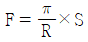
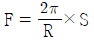
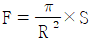
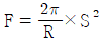
(정답률: 54%)
2과목: 전력공학
21. 복도체를 사용하면 송전용량이 증가하는 주된 이유로 옳은 것은?
- 코로나가 발생하지 않는다.
- 전압강하가 적어진다.
- 선로의 작용 인덕턴스는 감소하고 작용 정전용량이 증가한다.
- 무효전력이 적어진다.
(정답률: 51%)
22. 계통 내의 각 기기, 기구 및 애자 등의 상호간에 적정한 절연강도를 지니게 함으로써 계통 설계를 합리적, 경제적으로 할 수 있게 하는 것은?
- 기준충격절연강도
- 절연협조
- 절연계급 선정
- 보호계전 방식
(정답률: 50%)
23. 전력원선도에서 구할 수 없는 것은?
- 조상용량
- 송전손실
- 정태안정 극한전력
- 과도안정 극한전력
(정답률: 39%)
24. 수용가 측에서 부하의 무효전력 변동 분을 흡수하여 플리커의 발생을 방지하는 대책이 아닌 것은?
- 부스터 방식
- 동기조상기와 리액터 방식
- 사이리스터 이용 콘덴서 개폐 방식
- 사이리스터용 리액터 방식
(정답률: 45%)
25. Y결선으로 접속된 커패시터를 Δ결선으로 변경하여 연결하였을 때 진상용량의 변화로 옳은 것은? (단, 3상의 동일한 전원에 접속하는 경우이고, QY는 Y결선한 커패시터의 진상용량이고, QΔ는 Δ결선한 커패시터의 진상용량이다.)
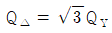
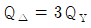
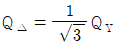
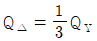
(정답률: 40%)
26. 과전류 차단기의 설치 장소로 적합하지 않은 곳은?
- 수용가의 인입선 부분
- 고압배전 선로의 인출장소
- 직접접지 계통에 설치한 변압기의 접지선
- 역률조정용 고압 병렬 커패시터 뱅크의 분기선
(정답률: 49%)
27. 페란티 현상이 발생하는 주된 원인은?
- 선로의 저항
- 선로의 인덕턴스
- 선로의 정전용량
- 선로의 누설컨덕턴스
(정답률: 55%)
28. 서울과 같이 부하밀도가 큰 지역에서는 일반적으로 변전소의 수와 배전거리를 어떻게 설정하는 것이 좋은가?
- 변전소의 수를 줄이고 배전거리를 증가시킨다.
- 변전소의 수를 늘리고 배전거리를 감소시킨다.
- 변전소의 수를 줄이고 배전거리를 감소시킨다.
- 변전소의 수를 늘리고 배전거리를 증가시킨다.
(정답률: 51%)
29. 파동 임피던스 Z1 = 600Ω인 선로 종단에 파동 임피던스 Z2 = 1300Ω의 변압기가 접속되어 있다. 지금 선로에서 파고 e1 = 900kV의 전압이 진입하였다면 접속점에서의 전압의 반사파는 약 몇 kV인가?
- 530
- 430
- 330
- 230
(정답률: 33%)
30. 전력 퓨즈(Power Fuse)는 주로 어떤 전류의 차단을 목적으로 사용하는가?
- 충전전류
- 과부하전류
- 단락전류
- 과도전류
(정답률: 54%)
31. 전력계통에서 전력용 커패시터와 직렬로 연결하는 직렬리액터는 계통 내 어떤 고조파를 제거하기 위해서 설치하는가?
- 제5고조파
- 제4고조파
- 제3고조파
- 제2고조파
(정답률: 53%)
32. 풍력발전에 대한 설명으로 적합하지 않은 것은?
- 자연에너지 이용의 신시스템으로 각광을 받고 있다.
- 풍력발전은 풍향, 풍속과 관계없이 설치가 가능하다.
- 풍차는 수평축과 수직축 풍차로 분류할 수 있다.
- 대용량발전에는 프로펠러와 다리우스 풍차가 있다.
(정답률: 59%)
33. 수지식 배전방식과 비교한 저압 뱅킹 방식에 대한 설명으로 틀린 것은?
- 전압 변동이 적다.
- 캐스케이딩 현상에 의해 고창확대가 축소된다.
- 부하증가에 대해 탄력성이 향상된다.
- 고장 보호 방식이 적당할 대 공급 신뢰도는 향상된다.
(정답률: 52%)
34. 다음 중 부하 전류의 차단능력이 없는 것은?
- 기중차단기(ACB)
- 유입차단기(OCB)
- 진공차단기(VCB)
- 단로기(DS)
(정답률: 57%)
35. 다음 중 전력계통의 안정도 향상대책으로 옳은 것은?
- 송전계통의 전달 리액턴스를 증가시킨다.
- 고속 재폐로 방식을 채용한다.
- 전원측 원동기용 조속기의 작동을 느리게 한다.
- 고장을 줄이기 위하여 각 계통을 분리시킨다.
(정답률: 45%)
36. 3상 1회선 송전선로의 소호 리액터의 용량(kVA)은?
- 선로 충전 용량과 같다.
- 선간 충전 용량의 1/2이다.
- 3선 일괄의 대지 충전 용량과 같다.
- 1선과 중성점 사이의 충전 용량과 같다.
(정답률: 45%)
37. 수차발전기의 출력 P, 수두 H, 수량 Q 및 회전수 N 사이에 성립하는 관계는?
- P ∝ QN
- P ∝ QH
- P ∝ QH2
- P ∝ QHN
(정답률: 41%)
38. 출력 20kW의 전동기로서 총 양정 10m, 펌프효율 0.75일 때 양수량은 약 몇 m3/min 인가?
- 9.18
- 9.85
- 10.31
- 11.02
(정답률: 34%)
39. 송전선로의 4단자 정수가 A, B, C, D이고 송전단 상전압이 Es인 경우 무부하 시의 충전전류(송전단전류)는?
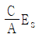
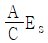
- ACEs
- CEs
(정답률: 37%)
40. 감전방지 대책으로 적합하지 않은 것은?
- 외함접지
- 아크혼 설치
- 2중 절연기기
- 누전 차단기 설치
(정답률: 55%)
3과목: 전기기기
41. 직류전동기의 부하가 증가할 때 나타나는 현상으로 틀린 것은?
- 역기전력이 감소한다.
- 전동기의 속도가 떨어진다.
- 전동기의 단자전압이 증가한다.
- 전동기의 부하전류가 증가한다.
(정답률: 30%)
42. 전기자권선과 계자권선이 병렬로만 연결된 직류기는?
- 직권
- 분권
- 복권
- 타여자
(정답률: 50%)
43. 동기 전동기의 기동법으로 옳은 것은?
- 자기기동법, 직류초퍼법
- 계자제어법, 저항제어법
- 자기기동법, 기동전동기법
- 직류초퍼법, 기동전동기법
(정답률: 36%)
44. 3상 유도전동기의 기계적 출력 P(kW), 슬립 s(%)로 운전할 때 2차 동손(kW)은?
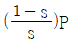
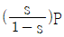
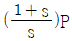
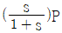
(정답률: 39%)
45. 3상 권선형 유도전동기의 속도제어를 위해서 2차 여자법을 사용하고자 할 때 그 방법은?
- 직류 전압을 3상 일괄해서 회전자에 가한다.
- 회전자에 저항을 넣어 그 값을 변화시킨다.
- 회전자 기전력과 같은 주파수의 전압을 회전자에 가한다.
- 1차 권선에 가해주는 전압과 동일한 전압을 회전자에 가한다.
(정답률: 33%)
46. 1차 전압과 2차 전압 사이의 위상이 같도록 설계된 유도전압조정기는?
- 회전변류기
- 3상 유도전압조정기
- 대각 유도전압조정기
- 단상 유도전압조정기
(정답률: 31%)
47. 전력변환기 중 정류기, 위상제어정류기, 초퍼로 구동할 수 있는 회전기기는?
- 유도전동기
- 동기전동기
- 직류전동기
- 리니어전동기
(정답률: 37%)
48. %임피던스 강하가 4%인 변압기가 운전 중단락되었을 때 단락전류는 정격전류의 몇배가 흐르는가?
- 15
- 20
- 25
- 30
(정답률: 52%)
49. 비례추이와 관계가 있는 전동기는?
- 동기전동기
- 정류자 전동기
- 3상 능형 유도전동기
- 3상 권선형 유도전동기
(정답률: 49%)
50. 단상 전파정류회로에서 출력전압의 맥동률은 약 얼마인가? (단, 저항부하일 경우이다.)
- 0.17
- 0.34
- 0.48
- 0.90
(정답률: 40%)
51. 병렬운전을 하고 있는 두 대의 3상 동기발전기 사이에 무효순환전류가 흐르는 것은 두 발전기의 기전력이 어떠할 때인가?
- 기전력의 위상이 다를 때
- 기전력의 파형이 다를 때
- 기전력의 크기가 다를 때
- 기전력의 주파수가 다를 때
(정답률: 45%)
52. 3상 동기발전기의 여자전류 5A에 대한 1상의 유기기전력이 600V이고 3상 단락전류는 30A이다. 이 발전기의 동기임피던스(Ω)는 얼마인가?
- 2
- 3
- 20
- 30
(정답률: 45%)
53. 동기발전기의 부하에 커패시터를 설치하여 앞서는 전류가 흐르고 있을 때 발생하는 현상으로 옳은 것은?
- 편자 작용
- 속도 상승
- 단자전압 강하
- 단자전압 상승
(정답률: 31%)
54. 단권변압기의 고압측 전압을 V1(V), 저압측 전압을 V2(V), 단권변압기의 자기용량을 Pn(kVA)이라 하면 부하용량(kVA)은?
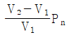
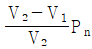
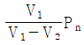
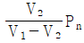
(정답률: 29%)
55. 1732/200V 단상변압기의 고압측에서 여자 전류는 io = 3sinwt + 0.8sin(3wt + a)(A)로 표시된다. 이 변압기 3대를 Y-Δ결선하여 고압측에 √3 × 1732 ≒ 3000V를 가할 때 저압측 무부하 Δ결선 내 순환전류의 실효값은 약 몇 A인가?
- 2.85
- 3.44
- 4.89
- 6.93
(정답률: 18%)
56. 단상 직권 정류자 전동기의 원리와 같은 전동기는?
- 직류 직권전동기
- 직류 분권전동기
- 직류 가동복권전동기
- 직류 차동복권전동기
(정답률: 52%)
57. 변압기의 철손이 Pi(kW), 전부하동손이 Pc(kW)일 때, 정격출력의 1/m 인 부하를 걸었을 때 전손실(kW)은?
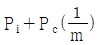
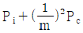
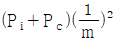
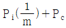
(정답률: 42%)
58. 2중 농형 유도전동기에서 외측(회전자 표면에 가까운 쪽) 슬롯에 사용되는 전선에 대한 설명으로 적합한 것은?
- 누설 리액턴스가 작고 저항이 커야 한다.
- 누설 리액턴스가 크고 저항이 커야 한다.
- 누설 리액턴스가 작고 저항이 작아야 한다.
- 누설 리액턴스가 크고 저항이 작아야 한다.
(정답률: 38%)
59. 유도전동기의 회전력에 대하여 옳게 설명한 것은?
- 단자전압에 비례
- 단자전압과 관계없음
- 단자전압 2승에 비례
- 단자전압 3승에 비례
(정답률: 43%)
60. 교류기에서 분포권이란 매극 매상의 홈(slot) 수가 몇 개인 것을 말하는가?
- 1개 이상
- 2개 이상
- 3개 이상
- 4개 이상
(정답률: 46%)
4과목: 회로이론
61. 정현파 교류의 평균치에 어떠한 수를 곱하여 실효치를 얻을 수 있는가?
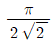
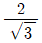
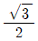
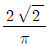
(정답률: 29%)
62. 그림의 T형 회로에 대한 4단가 정수 A, B, C, D로 틀린 것은?
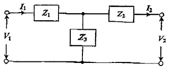
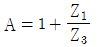
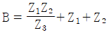
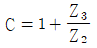
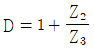
(정답률: 45%)
63. 3상 회로에서 각 상전압이 Va = 60(V), Vb = 0(V), Vc = -10 + j120(V)일 때, a상의 정상분 전압은 약 몇 V인가?
- -13 - j24
- 16 + j40
- 56 - j17
- 60 + j0
(정답률: 27%)
64. 불평형 3상 회로 조건에서 영상분 회로(경로)가 존재하는 3상 변압기의 구성은?
- Δ-Δ 결선의 3상 3선식
- Δ-Y 결선의 3상 3선식
- Y-Δ 결선의 3상 3선식
- Y-Y 결선의 3상 4선식
(정답률: 41%)
65. 그림과 같은 커패시터 C의 초기 전압이 V(0)일 때 라플라스 변환에 의하여 s함수로 표현된 등가회로로 옳은 것은?
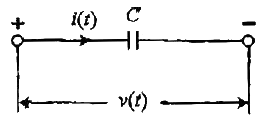
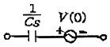
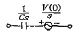
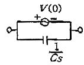
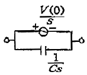
(정답률: 32%)
66. 저항 R = 5000Ω과, 커패시터 C = 20 · μF 이 직렬로 접속된 회로에 일정전압 V = 100V를 연결하고 t = 0에서 스위치(S)를 넣을 때 커패시터 단자전압(V)은? (단, t = 0에서의 커패시터 전압은 0V이다.)
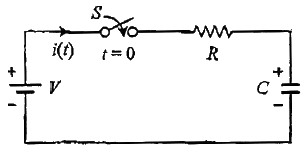
- 100(1 – e10t)
- 100e10t
- 100(1 – e-10t
- 100e-10t
(정답률: 31%)
67. 극좌표 형식으로 표현된 전류의 페이저가 각각
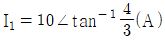
,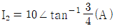
이고, I = I1 + I2 일 때, I(A)는?- -2 + j2
- 14 + j14
- 14 + j4
- 14 + j3
(정답률: 35%)
68. 30Ω의 저항과 40Ω의 유도성 리액턴스가 병렬로 연결되어 있다. 이 RL 병렬회로에 v(t) = 220√2 sin377t (V)의 전압을 인가할 때 흐르는 전류는 약 몇 A인가?
- 12.96sin(377t – 36.87°)
- 9.17sin(377t – 36.87°)
- 12.96∠-36.87°
- 10.37 + j7.78
(정답률: 24%)
69. 그림에서 저항 20Ω에 흐르는 전류(A)는?
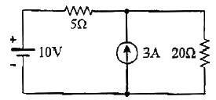
- 0.5
- 1.0
- 1.5
- 2.0
(정답률: 33%)
70. 3상 Y결선의 전원에서 각 상전압의 크기가 220V일 때 선간전압의 크기는 약 몇 V인가?
- 127
- 220
- 311
- 381
(정답률: 44%)
71. 그림에서 전류 Is(A)의 크기는? (단, I1=5(A), I2=3(A), I3=2(A), I4=2(A))
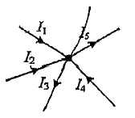
- 3
- 5
- 8
- 12
(정답률: 51%)
72. RL 직렬회로에 v(t)전압을 인가하였을 때 제3고조파 성분의 실효치 전류는 약 몇 A인가? (단, v(t) = 150√2 = coswt + 100√2 sin2wt + 25√2 sin5wt(V), R = 5Ω, wL = 4Ω))
- 7.69
- 10.88
- 15.62
- 22.08
(정답률: 22%)
73. 전압 V가 200V인 3상 회로에 그림과 같은 평형 부하를 접속했을 때 선전류의 크기는 약 몇 A인가? (단, R = 9Ω, 1/wC = 4Ω)
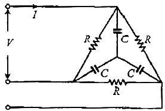
- 28.9
- 38.5
- 48.1
- 115.5
(정답률: 26%)
74. 커패시터 C를 100V로 충전하고 10Ω의 저항으로 1초 동안 방전하였더니 C의 단자전압이 90V로 감소하였다. 이때 C는 약 몇 F 인가?
- 1.⑤
- 0.95
- 0.75
- 0.55
(정답률: 36%)
75. 전압이 v(t) = 20sinwt + 30sin3wt(V)이고, 전류가 i(t) = 30sinwt + 20sin3wt(A)인 왜형파 교류 전압과 전류에 대한 역률은 약 얼마인가?
- 0.43
- 0.57
- 0.86
- 0.92
(정답률: 16%)
76. 600kVA, 역률 0.6(자상)의 부하 A와 800kVA, 역률 0.8(진상)의 부하 B가 함께 접속되어 있을 때 전체 피상전력(kVA)은?
- 0
- 960
- 1000
- 1400
(정답률: 33%)
77. 회로에서 단자 a-b 사이의 합성저항 Rab는 몇 Ω인가?
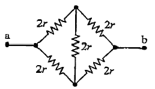
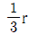
- r
- 2r
(정답률: 39%)
78. 그림과 같이 높이가 1인 펄스의 라플라스 변환은?
(정답률: 42%)
79. 대칭 3상 Y결선 부하에서 1상당의 부하 임피던스 Z= 16 + j12(Ω)이다. 부하전류의 크기가 10A일 때 이 부하의 선간전압의 크기는 약 몇 V인가?
- 200
- 245
- 346
- 375
(정답률: 43%)
80. 다음 회로에서 4단자 정수 A, B, C, D 중 C의 값은?
- 1
- jwL
- jwC
- 1 + jw(L + C)
(정답률: 43%)
5과목: 전기설비
81. 변압기에 의하여 특고압 전로에 결합되는 고압전로에 방전하는 장치를 그 변압기의 단자에 가까운 1극에 설치하였다고 할 때, 이 방전장치의 접지저항은 몇 Ω 이하로 유지하여야 하는가?
- 10
- 30
- 50
- 100
(정답률: 37%)
82. 도로에 시설하는 가공 직류 전차선로의 경간은 몇 m 이하로 하여야 하는가?
- 40
- 50
- 60
- 70
(정답률: 36%)
83. 고압 가공전선로에 사용하는 가공지선은 인장강도 5.26kN 이상의 것 또는 지름 몇 mm 이상의 나경등선이어야 하는가?
- 2
- 3
- 4
- 5
(정답률: 44%)
84. 지중 전선로의 시설 방식이 아닌 것은?
- 관로식
- 압착식
- 암거식
- 직접 매설식
(정답률: 52%)
85. 사람이 접촉할 우려가 있는 제1종 또는 제2종 접지공사에서 지하 75cm로부터 지표상 2m까지의 접지선은 사람의 접촉우려가 없도록 하기 위하여 어느 것을 사용하여 보호하는가?
- 이음부분이 없는 플로어덕트
- 난연성이 없는 콤바인덕트관
- 두께 2mm 이상의 합성수지관
- 피막의 두께가 균일한 비닐포장지
(정답률: 46%)
86. 한 수용장소의 인입선에서 분기하여 지지물을 거치지 않고 다른 수용 장소의 인입구에 이르는 부분의 전선을 무엇이라 하는가?
- 옥상배선
- 옥외배선
- 연접인입선
- 가공인입선
(정답률: 47%)
87. 전로에 시설하는 400V 이상의 저압용 기계기구의 철대 및 금속제 외합에는 제 몇 종 접지공사를 해야 하는가?
- 제1종 접지공사
- 제2종 접지공사
- 제3종 접지공사
- 특별 제3종 접지공사
(정답률: 35%)
88. 가공전선로의 지지물에 하중이 가하여지는 경우에 그 하중을 받는 지지물의 기초의 안전율은 얼마 이상이어야 하는가?
- 0.5
- 1
- 1.5
- 2
(정답률: 35%)
89. 저압 옥내간선에서 분기하여 전기사용기계 기구에 이르는 저압 옥내 전로는 저압 옥내간선과의 분기점에서 전선의 길이가 몇 m 이하인 곳에 개폐기 및 과전류차단기를 시설하여야 하는가? (단, 분기점에서 개폐기 및 과전류차단기까지의 전선의 허용전류 등은 고려하지 않고 일반적인 경우이다.)
- 2
- 3
- 4
- 5
(정답률: 37%)
90. 66kV 가공전선이 건조물과 제1차 접근상태로 시설되는 경우 가공전선과 건조물 사이의 이격거리는 최소 몇 m 이상이어야 하는가? (단, 전선은 나전선으로 한다.)
- 3.0
- 3.2
- 3.4
- 3.6
(정답률: 17%)
91. 최대 사용전압이 161kV, 중성점 직접접지식 전로에 접속되는 변압기 전로의 절연내력 시험전압은 몇 kV인가? (단, 성형결선의 것에 한하며, 정류기에 접속하는 권선은 제외한다.)
- 115.92
- 147.12
- 187.10
- 201.25
(정답률: 28%)
92. 지중에 매설된 금속제 수도관로를 접지공사의 접지극으로 사용하려고 할 경우로 틀린 것은?
- 대지와의 전기저항 값이 3Ω 이하로 유지되는 금속제 수도관로는 접지공사의 접지극으로 사용할 수 있다.
- 접지선과 금속제 수도관로의 접속부를 사람이 접촉할 우려가 있는 곳에 설치하는 경우에는 손상을 방지하도록 방호장치를 설치하여야 한다.
- 대지와의 사이에 전기저항 값이 3Ω 이하를 유지하는 건물의 철골은 경우에 따라 제1종 및 제2종 접지공사의 접지극으로 사용할 수 있다.
- 접지선과 금속제 수도관로의 접속부를 수도계량기로부터 수도 수용가측에 설치하는 경우에는 수도계량기를 사이에 두고 양측 수도관로를 전기적으로 확실하게 연결해야 한다.
(정답률: 40%)
93. 특고압 가공전선로의 지지물로 사용하는 B종 철근·B종 콘크리트주 또는 철탑의 종류 중 전선로의 지지물 양쪽의 경간의 차가 큰 곳에서 사용하는 것은?
- 내장형
- 직선형
- 인류형
- 보강형
(정답률: 50%)
94. 고압 가공전선이 사람이 거주 또는 근무하거나 빈번히 출입하거나 모이는 조영물과 접근 상태로 시설되는 경우 고압 가공전선과 상부 조영재의 옆쪽에서의 이격거리는 몇 m 이상이어야 하는가? (단, 전선은 경동연선이라고 한다.)
- 0.4
- 1.0
- 1.2
- 2.0
(정답률: 25%)
95. 사람이 접촉할 우려가 없도록 시설된 백열전등 또는 방전등 및 이에 부속하는 전선에 전기를 공급하는 옥내 전로의 대지 전압은 최대 몇 V인가? (단, 주택의 옥내 전로를 제외한다.)
- 100
- 150
- 300
- 450
(정답률: 51%)
96. 특고압 가공전선로의 지지물로 사용되는 B종 철근·B종 콘크리트주의 각도형은 전선로 중 최소 몇 도를 초과하는 수평각도를 이루는 곳에 사용하는가?
- 3
- 5
- 8
- 10
(정답률: 39%)
97. 다도체를 구성하는 전선이 2가닥마다 수평으로 배열되고 도한 그 전선 상호 간의 거리가 전선의 바깥지름의 20배 이하인 경우 구성재의 수직 투영면전 1m2에 대한 등압 하중은 몇 Pa인가?
- 444
- 455
- 666
- 677
(정답률: 35%)
98. 가요전선관 공사에 의한 저압 옥내배선의 시설 기준에 적합한 것은?
- 옥외용 비닐절연전선을 사용하였다.
- 2종 금속제 가요전선관을 사용하였다.
- 가요전선관에 제1종 접지공사를 하였다.
- 전선은 연동선으로 단면적 16mm2의 단선을 사용하였다.
(정답률: 30%)
99. 아래 그림은 전력보안통신설비의 보안장치이다. RP1에 대한 설명으로 틀린 것은?
- 전류용량은 50A이다.
- 자복성(自復性)이 없는 릴레이 보안기이다.
- 최소 감도전류 때의 응동시간이 1사이클 이하이다.
- 교류 300V 이하에서 동작하고, 최소 감도전류가 3A 이하이다.
(정답률: 31%)
100. 옥내에 시설하는 저압전선으로 나전선을 사용하고 공사방법 애자사용공사에 의하여 전개된 곳에 시설하는 방법이 아닌 것은?
- 전기로용 전선
- 금속덕트용 전선
- 전선의 피복 절연물이 부식하는 장소에 시설하는 전선
- 취급자 이외의 자가 출입할 수 없도록 설비한 장소에 시설하는 전선
(정답률: 33%)